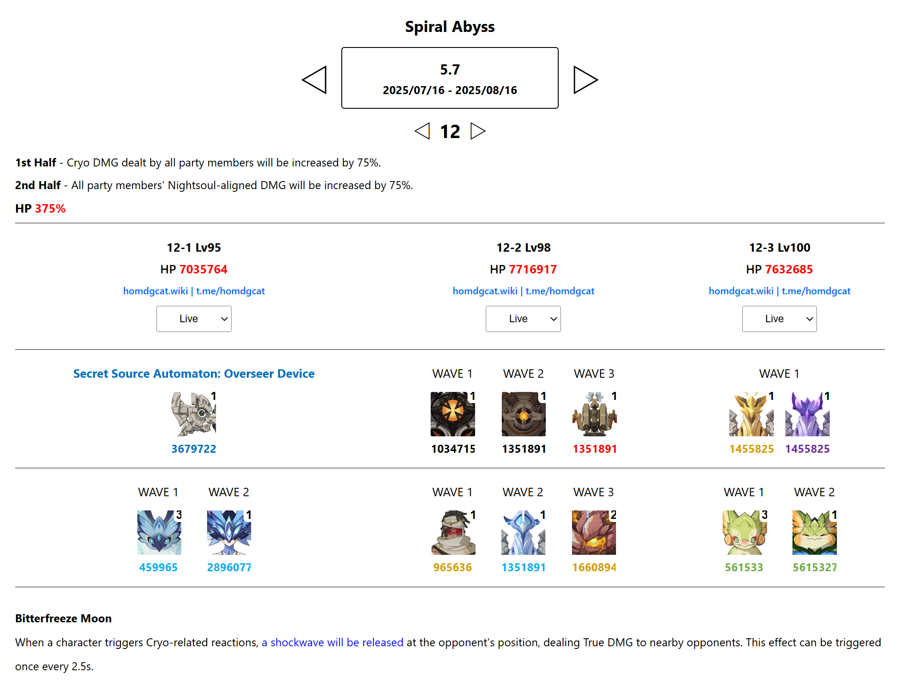

Spiral Abyss version 5.7
Overview about current Spiral Abyss
This Spiral Abyss doesn't feature any particularly new enemies - we'll be facing the usual familiar ones. However, some of them have significantly more HP and there are a few small tricks to note on certain special floors. Overall, this Abyss is fairly easy. Let's take a look at the buffs of both halves of this season :
- 1st Half - Cryo DMG dealt by all party members will be increased by 75%.
- 2nd Half - All party members' Nightsoul-aligned DMG will be increased by 75%.

Analyze
First Half
In Chamber 1 First Half, we're facing Secret Source Automaton : Overseer Device once again. Just like in the previous season, this is still a playground for Cryo main DPS characters like Skirk, Wriothesley, or Ayaka, as well as strong Cryo sub - DPS like Escoffier. Teams built around these characters will benefit greatly from the First Half buffs.
Melt teams with dual Cryo characters are still performing impressively. Teams that feature a Hydro DPS alongside Cryo units also remain very solid.
However, if you don't have access to those team comps, I'd recommend trying the Naxingku - Chongyun setup against Secret Source Automaton : Overseer Device. I didn't recommend this team last season because the enemy had over 5 million HP - too much for a Hyperbloom setup to reliably carry. But this time, its HP has been reduced to just 3.6 million, giving Hyperbloom teams a real chance to shine. Other variants like Nafuku Nayaefu or any other hyperbloom team are still working well too.
The key point to focus on here is how to consistently apply Cryo when Chongyun is your only Cryo unit. Don't worry - I've got you covered. Check out my video below to see exactly how to make it work
The team I used in the video is the standard Naxingku lineup. Chongyun's Elemental Skill infuses normal attacks (from sword, claymore, and polearm users) with Cryo. We take advantage of this to effectively turn Xingqiu into a Cryo applier.
To do this, we need to swap Nahida off-field and let Xingqiu take the field temporarily. Be mindful of the cooldowns on Kuki Shinobu and Nahida's skills so you can reapply Electro and Dendro for Hyperbloom reactions in time.
Now, why didn't I use Kuki as the on-field unit to apply Cryo instead? The reason is Xingqiu has faster normal attack animations with less delay compared to Kuki, which allows Cryo to be applied more efficiently.
There's really nothing to say about Chamber 2. Any standard team can clear it with ease.
In Chamber 3, both Electro and Geo Wayob appear simultaneously at two different corners of the arena. I recommend quickly unleashing your combos - especially your key Elemental Bursts - and focus on the Geo Wayob first instead of the Electro one. During their special skill phase, the Wayobs will summon a white shield that absorbs damage. If you manage to break the shield before the Wayob retrieves it, your characters will get a full energy refund. Meanwhile, the Electro Wayob will move toward you on its own, so once that happens, just focus on finishing them both off.
Second Half
In the second half , if you don't want to switch lineups, Dendro teams are not recommended because Moutain King : Yumkasaur has high Dendro RES.
The enemy mechanics and spawn patterns in the second half are exactly the same as in previous encounters, so I won't go into much detail. Just one small note - regarding the Mountain King in the final chamber. Its HP exceeds 5 million this cycle, so be mindful of the time.
Note
Although I mentioned that strong Cryo applicators have the upper hand in the first half, Citlali is actually a special case. This is because the Secret Source Automaton: Overseer Device maintains a fixed 50% elemental resistance and deals massive damage when it comes into contact with Nightsoul. So be cautious - if you don't have many stable sources of Cryo , you'll need to carefully balance your damage output and dodging skills to survive.